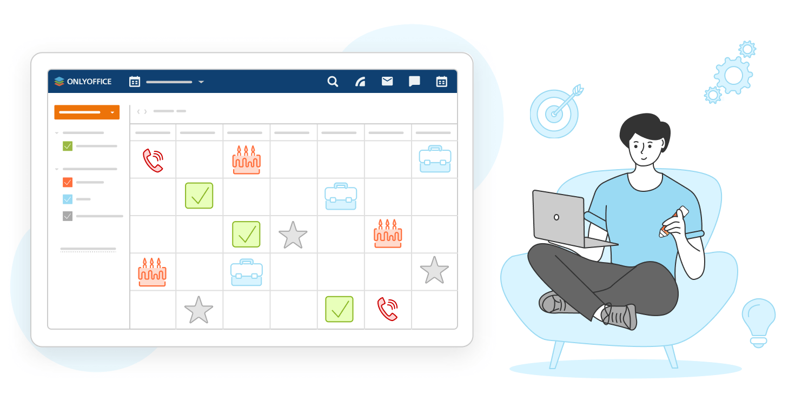
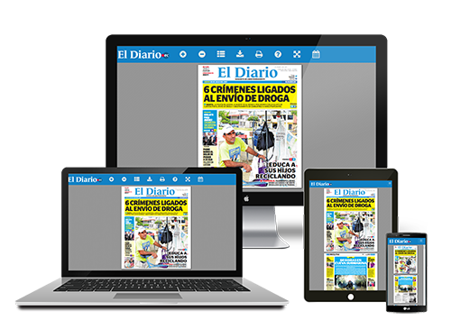

Proyectos Actuales
Proyecto: Task Master
Integrantes:
Laura Pérez
Carlos Díaz

Descripción: Aplicación web para organizar tareas académicas con recordatorios personalizados.
Objetivo: Mejorar la gestión del tiempo de los estudiantes universitarios.
Proyecto: Mood Journal
Integrantes:
Andrea Gómez
David Salas

Descripción: Diario digital con emojis y gráficos que permite al usuario registrar su estado emocional.
Objetivo: Fomentar el autoconocimiento emocional y detectar patrones de estrés.
Proyecto: UniConnect
Integrantes:
Sofía Herrera
Mario Ruiz
Descripción: Red social para estudiantes con intereses similares y grupos de estudio.
Objetivo: Fortalecer las relaciones entre compañeros y el aprendizaje colaborativo.